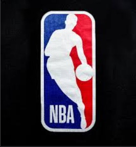
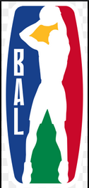
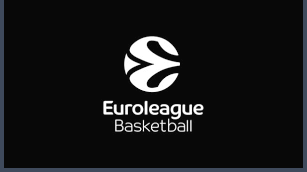
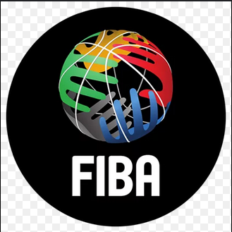
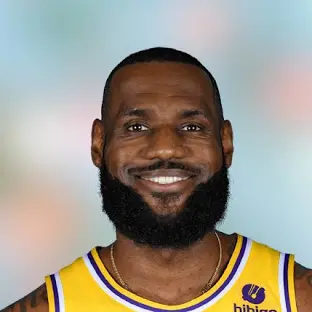

voici quelques ligues
j'ai marqué le plus de points dans la NBA!!!
+49000 points
Lebron James
Quelques conseils importants:
- Objectifs de performance contre objectifs de résultat:
Les objectifs efficaces se concentrent sur les performances et non sur le résultat. La performance est ce que l’athlète contrôle. Les résultats sont souvent contrôlés par les autres. Un athlète peut faire des performances exceptionnelles et ne pas gagner une compétition car les autres athlètes ont fait des performances encore meilleures. À l’inverse, un athlète peut faire de mauvaises performances et gagner quand même si les autres athlètes font des performances encore plus mauvaises. Si l’objectif d’un athlète consiste à réaliser un exercice en un certain temps, il contrôle mieux l’accomplissement de cet objectif qu’une victoire. Cependant, l’athlète maîtrise encore davantage l’accomplissement d’un objectif si ce dernier consiste à finir l’exercice en faisant appel à la technique appropriée. Cet objectif de performance donne enfin à l’athlète davantage de contrôle sur ses performances.
Mesurable et spécifique:
Les objectifs efficaces sont très spécifiques et mesurables. Les objectifs formulés par « Je veux donner le meilleur de moi-même ! » ou « Je veux améliorer mes performances ! » sont vagues et difficiles à mesurer. C’est positif mais difficile, voire impossible, d’évaluer s'ils ont été atteints. Pour être réalistes, les objectifs mesurables doivent créer une base des performances enregistrées pendant les deux dernières semaines.
Difficile, mais réaliste:
Des objectifs efficaces sont perçus comme stimulants mais pas menaçants. Un objectif stimulant est un objectif perçu comme difficile mais accessible dans un délai raisonnable avec un effort ou une aptitude raisonnable. Un objectif menaçant est perçu comme au-delà de la capacité actuelle. Réaliste implique un jugement. Les objectifs basés sur une base de performances enregistrées au cours de la dernière ou des deux dernières semaines ont de grandes chances d'être réalistes.
Objectifs à court terme contre objectifs à long terme:
Les objectifs à long et à court terme donnent une orientation, mais les objectifs à court terme semblent engendrer le plus de motivation. Les objectifs à court terme sont immédiatement accessibles et constituent les étapes vers les objectifs à long terme. Des objectifs à court terme irréalistes sont plus faciles à reconnaître que les objectifs irréalistes à long terme. Les objectifs irréalistes peuvent être modifiés avant qu'un temps d'entraînement précieux ait été perdu.